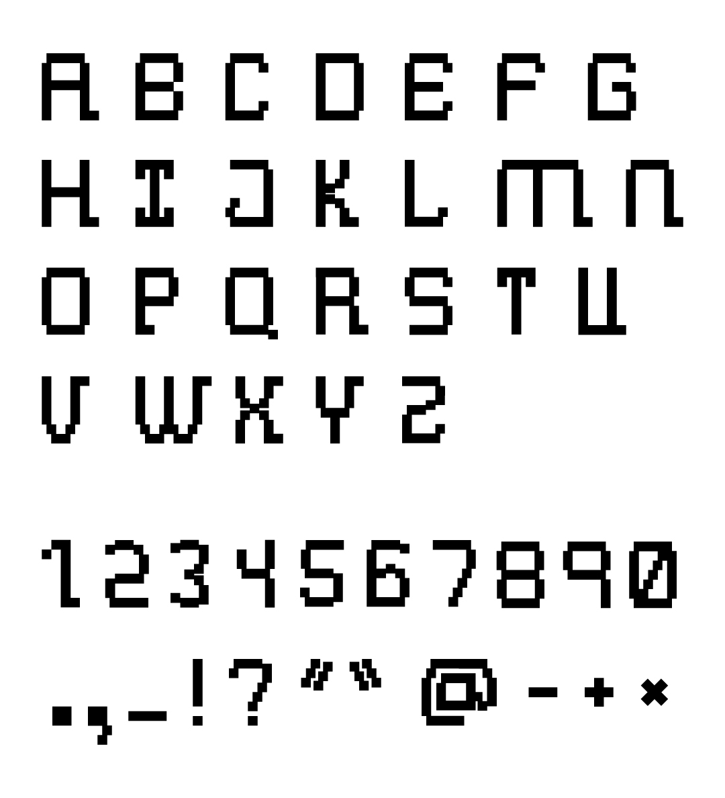
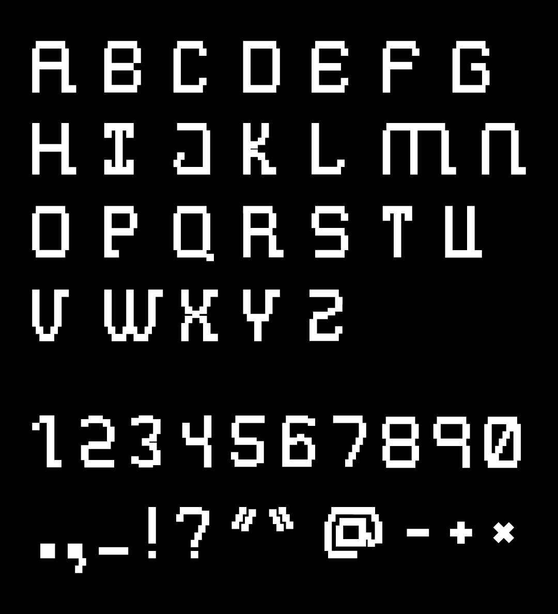
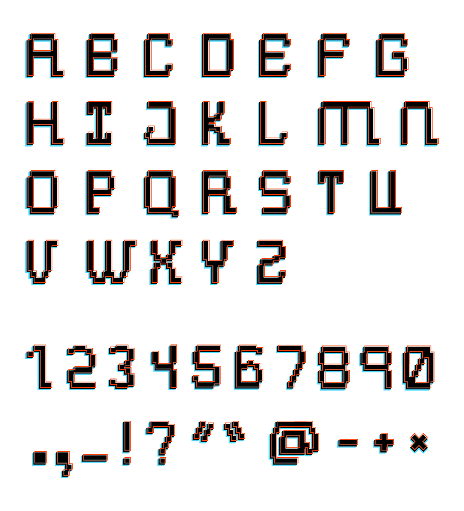
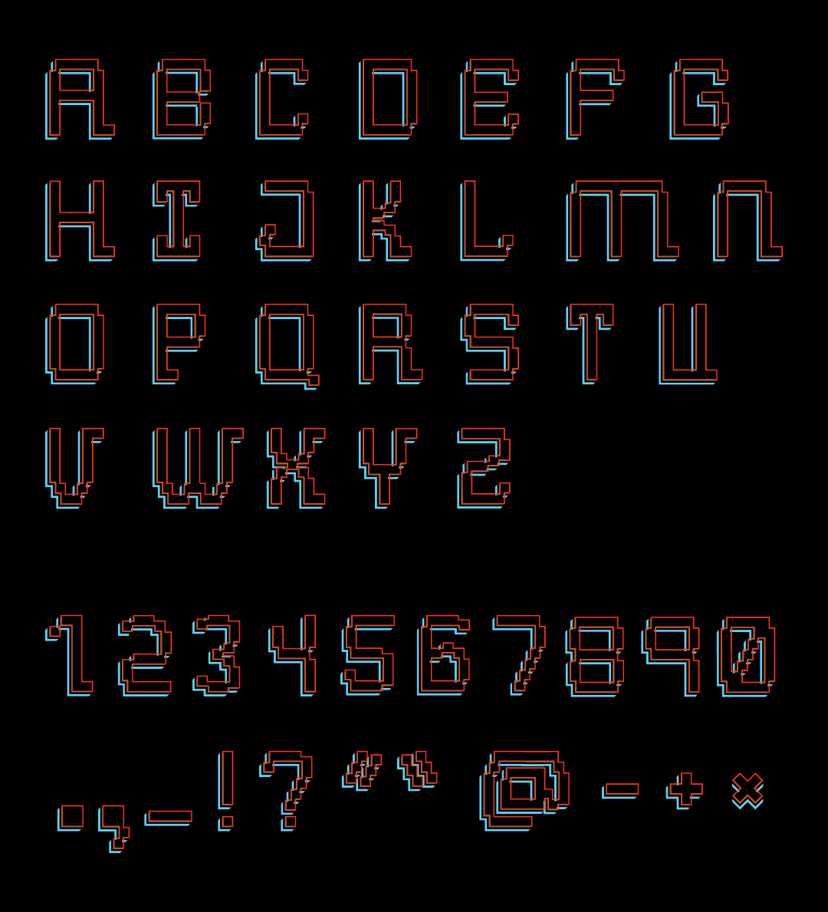
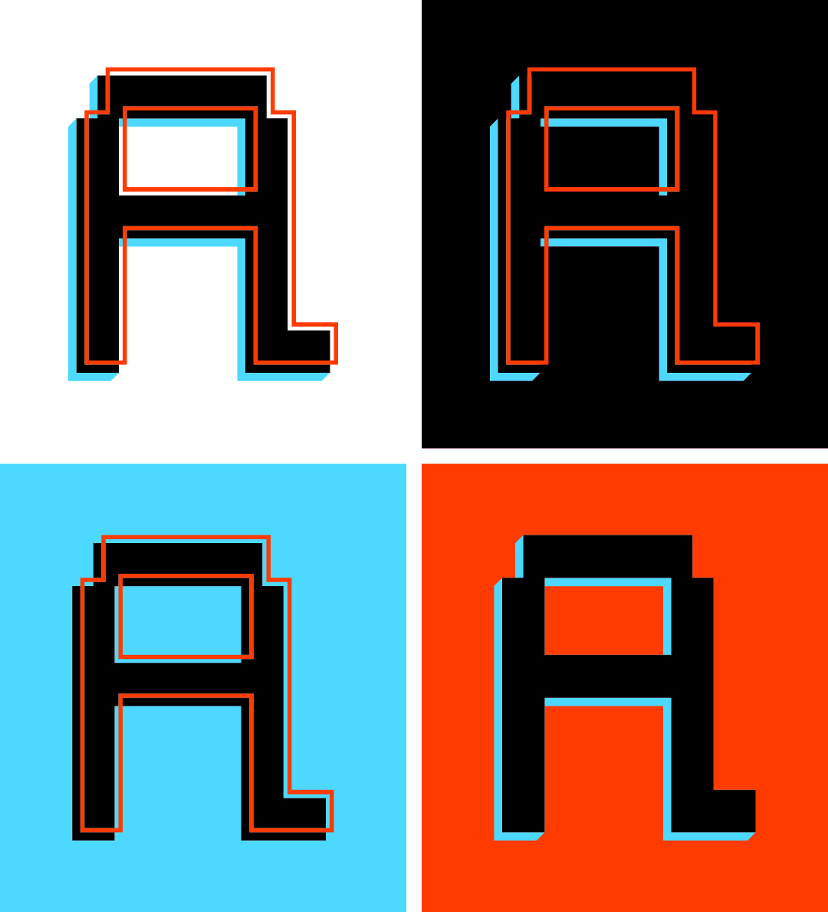

Custom Typeface
In the Spring of Junior year in the design program we were tasked with creating our own typeface. As a video game enthusiast, I wanted to create a pixel-based font similar to old 8-bit games. I wanted to incorporate an element that set this pixel typeface apart from others, so I added a right-side serif only. I only designed uppercase letters, along with numbers and some special characters. Below you will find a few different visual variations of the typeface. I created these variations to show the versatility of the forms.




